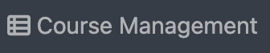
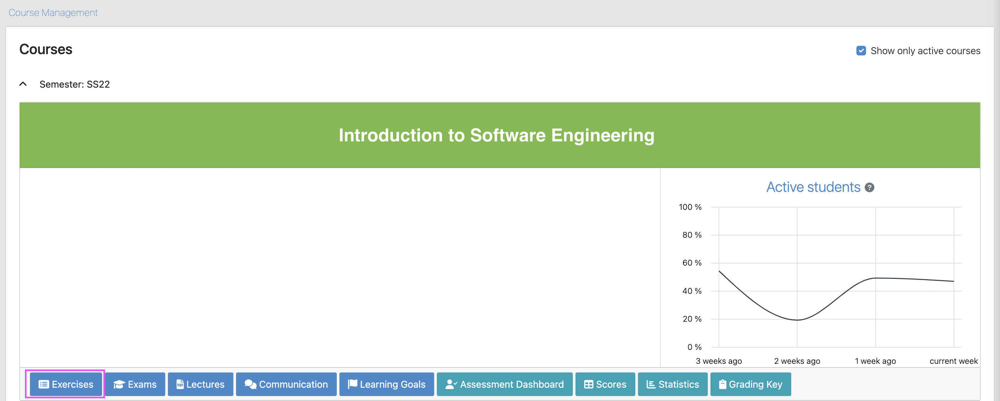
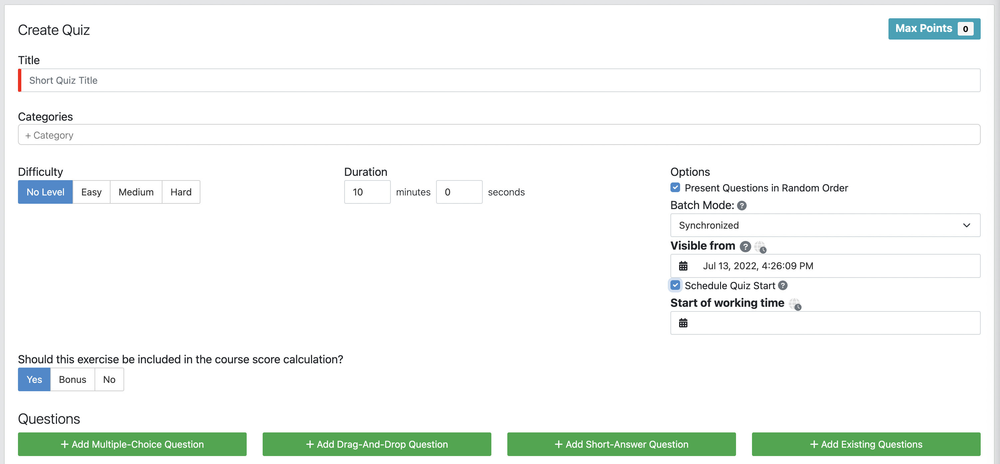
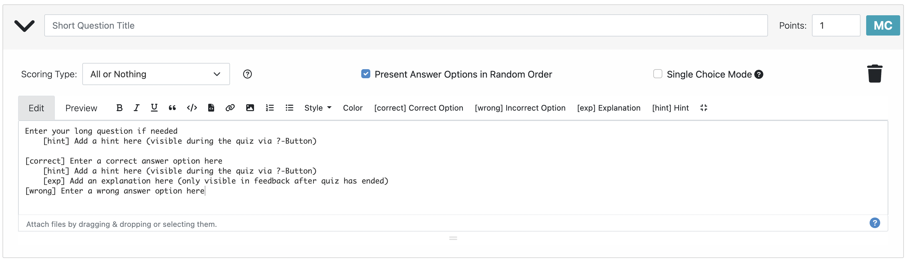
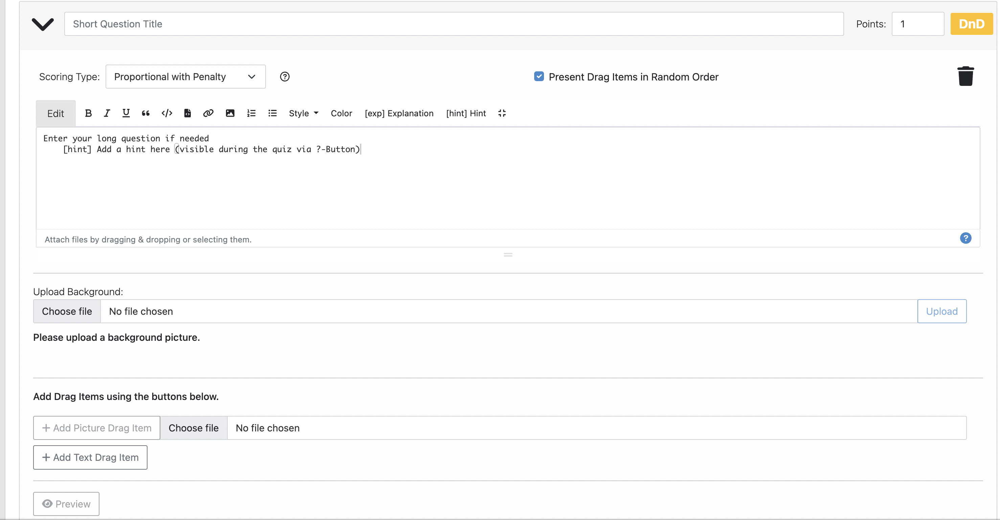
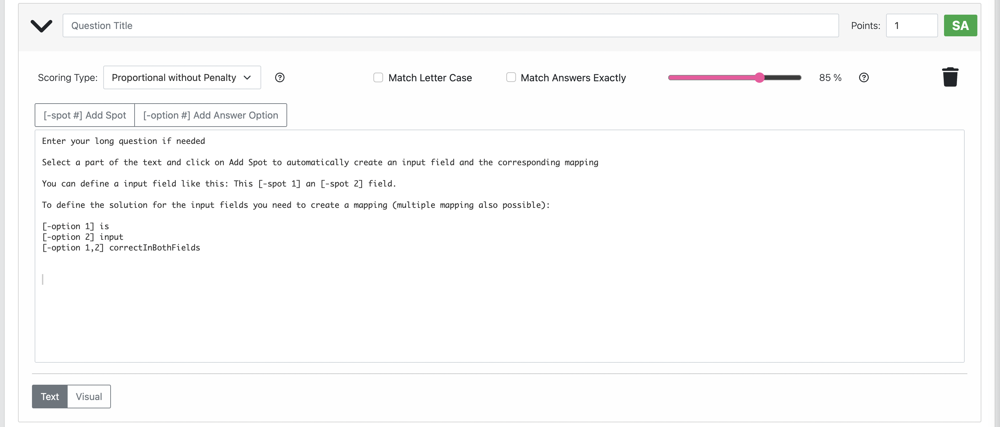
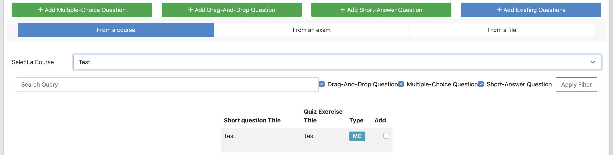
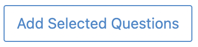

On the Artemis home page, click on the Course Management button .
Navigate into Exercises of a specific course by clicking on the exercise button.

In the quiz exercises section, click on the Create Quiz button to open the following form to create the new quiz exercise.

Title: Provide a title for the quiz exercise (The red line means that this field is mandatory).
Categories: Type the category for the quiz exercise.
Difficulty: Select the difficulty level among Easy, Medium and Hard. It is possible to select No Level.
Duration: Provide the time in minutes and seconds for students to solve the quiz exercise.
Options: Choose between presenting the questions in random order or not.
Batch Mode: Batch Mode controls how students can participate in the quiz.
Synchronized: There is exactly one opportunity for all students to participate in the quiz.
Batched: There are multiple opportunities for students to participate in the quiz by using a password.
Individual: Students can participate in the quiz by themselves at any time while it is released.
Visible from: The date and hour when the quiz becomes visible to students.
Schedule Quiz Start: To establish the date and hour at which the quiz will be available for solving.
Start of working time: Set the time for the students to see the questions and start answering them. Students can start working on the quiz from this time until the duration ends.
Should this exercise be included in the course score calculation?:
Yes: the points will be included in the course score calculation.
No: the points will not be included in the course score calculation.
Bonus: the points will be considered as bonus points.
Questions: There are four ways to add questions to a quiz exercise.
Add Multiple-Choice Question
This kind of question is composed of a problem statement with multiple options.

Short question title: Provide a short title (Mandatory).
Points: Assign the value points for this question.
Scoring type:
All or Nothing
Proportional with Penalty
Proportional without Penalty
Present answer options in random order.
Single Choice Mode: When there is just one correct option. This disables the Scoring type (resp. sets it to All or Nothing).
Delete icon: To delete the current question.
Edit View: Enables the text editor to write the quiz statement and its options, hints and explanations.
Edit bar: When the edit view is enabled, the format bar provides:
Style to the statement text
Correct Options [correct]
Incorrect Options [wrong]
Explanations [exp]
Hints [hint]
Text editor: The quiz statement can be developed with options, hints and explanations.
Preview View: Enables the student view.
Add Drag-And-Drop Question
This kind of question is composed of a problem statement, a background image, and drag and drop options.

Short question title: Provide a short title.
Points: Assign the value points for this question.
Scoring type:
All or Nothing
Proportional with Penalty
Proportional without Penalty
Present Drag Items in Random order.
Delete icon: To delete the current question.
Edit View: Enables the text editor to write the question statement with explanations and hints.
Edit bar: When the edit view is enabled, the format bar provides:
Style to the statement text
Explanations [exp]
Hints [hint]
Text editor: The quiz statement can be developed with hints and explanations.
Upload Background: To select and upload the background from the PC files to drag and drop the options over it.
Add Drag Items:
Text items: Type the options.
Image items: Can be uploaded from the PC files.
Preview View: Enables the student view.
Add Short-Answer Question
This kind of question is composed of a statement and spots to fill them out by typing the answers.

Short question title: Provide a short title.
Points: Assign the value points for this question.
Scoring type:
All or Nothing
Proportional with Penalty
Proportional without Penalty
Match Letter Case
Match Answers Exactly: This option moves the match slider to 100%.
Delete icon: To delete the current question.
Add Spot Option: To add the spot between the text to be filled out.
Add Answer Option: To provide the answer for each spot.
Text editor: The quiz statement can be developed with the spots and options.
Text View: Enables the text editor to write and edit the question statement.
Visual View: Enables the student view.
Add Existing Questions
This option allows to import existing questions from other quiz exercises, courses, exams and files.

Source buttons:
From a course
From an exam
From a file
List picker to select a specific course, exam or file.
Searching bar: to look for the question providing its name or part of it.
Filter options according to the type of questions:
Drag and Drop Question
Multiple Choice Question
Short Answer Question
Apply filter button
List of questions with the title, short title, and Type. In the Add column, it is possible to select all questions to be imported.
At the end of the list, click the Add selected Questions button  to import all selected questions.
Footer: On the creation quiz page there is a footer with the following fields:
The searching bar: Allows to look for a specific quiz by typing its name or part of it.
The list of quizzes: Whit their ID, title, course and indicator if they are exam questions.
Clicking the Import button opens the quiz editor with the existing questions. Here it is possible to edit all parameters such as in Create new Quiz Exercise.
If a quiz exercise is available on the Artemis home page as a current exercise, it will be possible to see it in the course overview or inside the course where it belongs.
To start the quiz, the student must press the Open quiz button .
If the quiz is set to start at a specific time and the student opens it before, he/she will see a message asking to wait until the quiz starts and displaying the remaining time.
To submit and finish the quiz, the student must press the Submit button . However, when the quiz time’s up, the answers will be submitted automatically.
The assessment is automatic and the student can see the result of the overall quiz and of specific questions. In the case of MC questions, the solution will be displayed.
{kind=link}
{kind=link}
{kind=link}
{kind=link}
{kind=link}
{kind=link}
{kind=link}
{kind=link}
{kind=link}
{kind=link}
{kind=link}
{kind=link}
{kind=link}
.
{kind=link}
{kind=link}
{kind=link}
{kind=link}
{kind=link}
{kind=link}
{kind=link}
{kind=link}